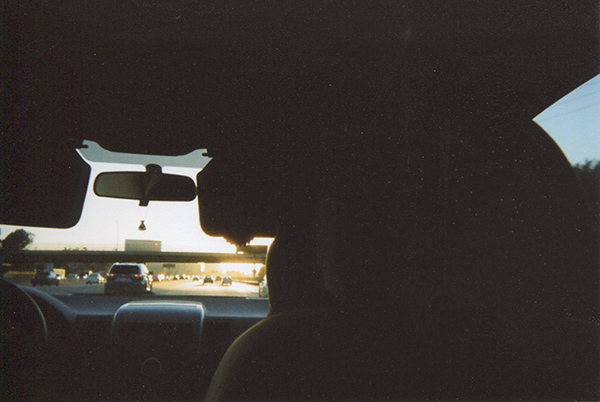

WORKS
ABOUT
CONTACT
THOUGHTS
The Supreme Court Fight Is A Microcosm of Our Political Moment
AUTHOR: Dylan Z. Siegel | DATE: September 28, 2018
REVIEW
A Review of
Kafka on the Shore
by Murakami Haruki
AUTHOR: Dylan Z. Siegel | DATE: August 12, 2018
REVIEW
A Review of
Ghosts of the Tsunami
by Richard Lloyd Parry
AUTHOR: Dylan Z. Siegel | DATE: March 20, 2018
THOUGHTS
A Culture of Light Watching: Binge Watching for Us
AUTHOR: Dylan Z. Siegel | DATE: February 25, 2018
REVIEW
The Irony of a Superpig: A Review of
Okja
AUTHOR: Dylan Z. Siegel | DATE: February 25, 2018
THOUGHTS
The Mystery of Baseball, The Romanticism of Baseball
AUTHOR: Dylan Z. Siegel | DATE: July 7, 2018

REVIEW
In a Landscape of Peculiarity: A Review of
The Rings of Saturn
by W.G. Sebald
AUTHOR: Dylan Z. Siegel | DATE: February 25, 2018
THOUGHTS
React Online, React Offline
AUTHOR: Dylan Z. Siegel | DATE: April 15, 2018
FICTION
A Pagoda
AUTHOR: Dylan Z. Siegel | DATE: February 25, 2018
FICTION
The Man With Glass In His Hands
AUTHOR: Dylan Z. Siegel | DATE: April 29, 2018
THOUGHTS
"Back to Reality": Millennial Labor and the Unified Self
AUTHOR: Dylan Z. Siegel | DATE: February 25, 2018
REVIEW
Black Mirror,
Trapped Intelligence, and Human Experience
AUTHOR: Dylan Z. Siegel | DATE: February 25, 2018